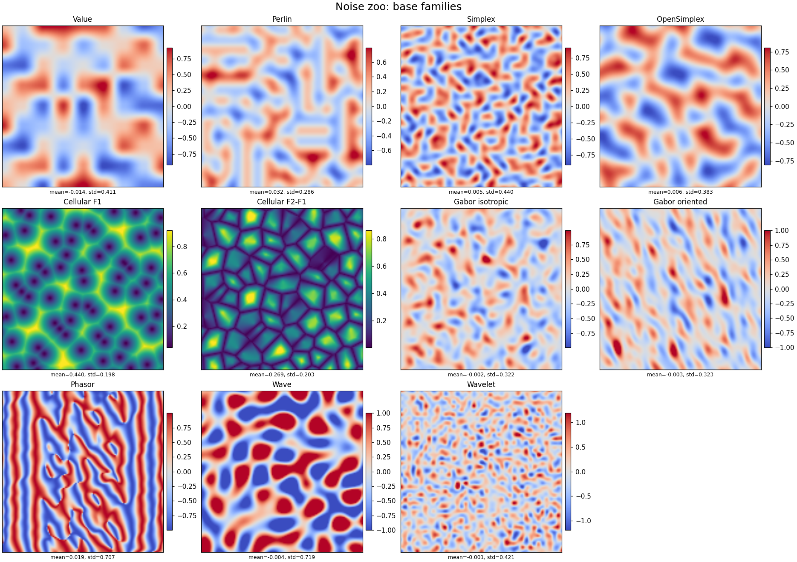
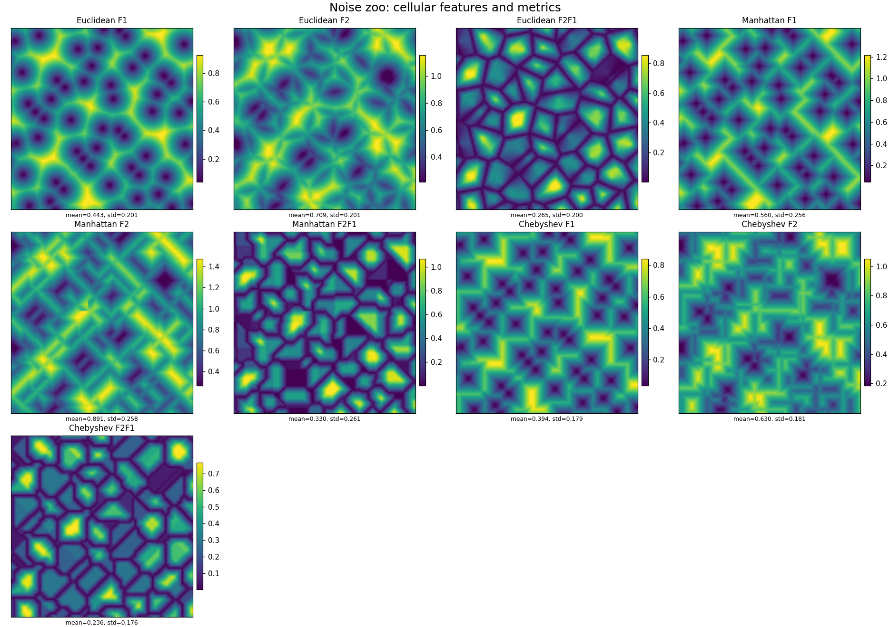
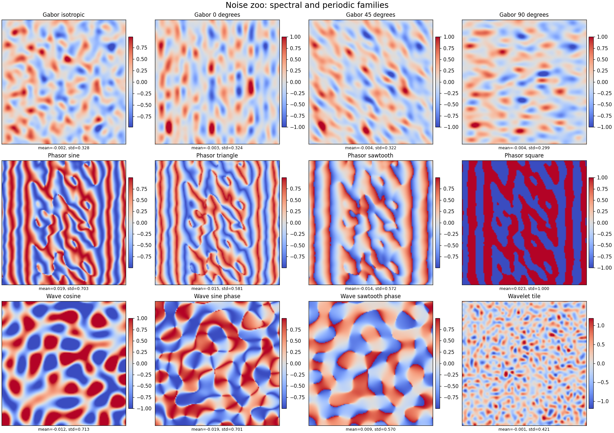
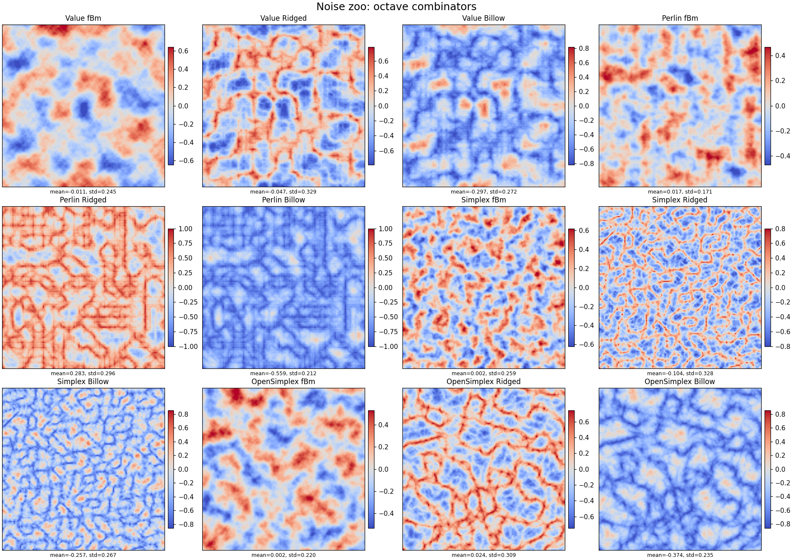
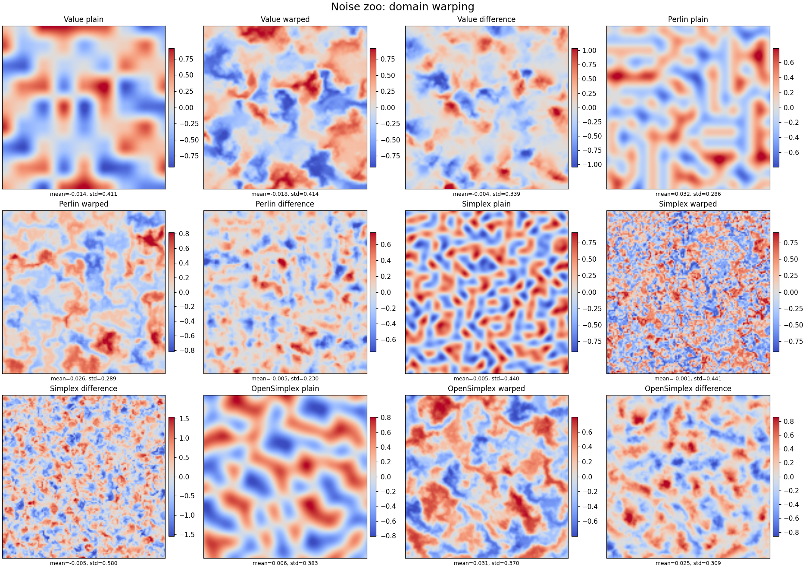

Procedural noise, one construction at a time
A practical review of value, gradient, cellular, spectral, phase, wavelet, fractal, and warped noise.
Procedural noise is not one algorithm with many brand names. It is a collection of ways to turn deterministic pseudo-random coefficients into a field that can be evaluated at arbitrary coordinates. The methods differ in what they randomize, how far each random primitive reaches, and what the output means. Those differences matter more than the usual question of which picture looks most “natural”.
This note reviews the constructions used in the accompanying noise library. Each method gets a short mechanism, its characteristic strengths and failure modes, and a small interactive experiment. The taxonomy is kept deliberately small; the main goal is to understand the methods individually and then see how octave sums and domain warping change them.
0.A taxonomy small enough to use
A useful first question is: what random primitive is placed in space, and how does it influence nearby points? That produces four practical families and separates them from later composition steps.
fBm, ridged, billow, and domain warping are not new base noises. They are operators applied to a base field. This is a small distinction, but it prevents many confused comparisons.
1.Value and gradient lattices
Lattice methods are point-evaluable: only a small neighborhood around the query coordinate is needed. A coordinate hash supplies the random coefficients, so the field is reproducible without storing a large texture. The variants differ in the coefficient attached to each lattice site and in the geometry of the neighborhood.
Value noise
Value noise assigns one random scalar $a_i$ to every lattice corner and interpolates the surrounding values. In one dimension, $N(x)=(1-f(t))a_i+f(t)a_{i+1}$, with $t=x-i$ and a smooth fade function $f$. The two-dimensional construction is the tensor product of the same interpolation.
Its main virtue is transparency. The coefficients are literal heights, densities, or weights, so it is easy to reason about and cheap to implement. The main limitation is equally visible: the lattice is doing all the work, and broad fields often reveal soft square-grid structure.
minimal mechanism
i = floor(x)
t = x - i
u = fade(t)
return lerp(hash(i, seed), hash(i + 1, seed), u)Perlin noise
Perlin noise replaces scalar corner values with gradient vectors. A corner contributes the dot product between its gradient $g_i$ and the displacement from the corner, $q_i(x)=g_i^\top(x-i)$. The dot products are then interpolated with a quintic fade. The field is therefore shaped by local directional tendencies rather than by literal corner heights.
This gives smoother-looking slopes and makes Perlin noise a useful default for height, density, and flow-adjacent fields. It is still a Cartesian-lattice method. With unfortunate scale, gradient set, or downstream thresholding, horizontal, vertical, and diagonal preferences remain visible.
minimal mechanism
g00 = gradient(hash(i, j, seed))
q00 = dot(g00, [x - i, y - j])
# repeat for the four corners
return quintic_bilerp(q00, q10, q01, q11)Simplex noise
Simplex noise keeps gradient coefficients but replaces square cells with triangles in two dimensions and tetrahedra in three. After a skew transform identifies the containing simplex, only $d+1$ corners contribute. Each contribution has compact radial support, commonly of the form
$$ q_k=(r^2-\lVert d_k\rVert^2)_+^4\,g_k^\top d_k. $$The triangular neighborhood reduces the visual dominance of the Cartesian axes and scales more favorably to higher dimensions. It does not become perfectly isotropic; it replaces a strong square lattice signature with a weaker simplicial one.
OpenSimplex
OpenSimplex is another gradient-lattice construction. It stretches the input into a convenient lattice space, evaluates a small set of nearby contributions, and squishes the geometry back. Its practical purpose is similar to simplex noise: reduce obvious Cartesian artifacts while retaining deterministic local evaluation.
In a renderer or terrain system, the choice between simplex and OpenSimplex is usually empirical. Both provide a general-purpose, isotropic-looking basis. The more important controls are often the coordinate scale, octave schedule, and any warp applied later.
Interactive comparison — needs JavaScript.
{kind=link}

2.Cellular / Worley noise
Cellular noise starts from random feature sites rather than random amplitudes. A common implementation places one jittered site in each lattice cell and inspects the $3\times3$ neighboring cells around a query. If $F_k(x)$ is the distance to the $k$-th nearest site, then the output already has geometric meaning.
$F_1$, $F_2$, and $F_2-F_1$
$F_1$ is the nearest-site distance. It produces pits, spots, cell interiors, and radial growth around sites. $F_2$ has a broader regional character. The difference $F_2-F_1$ becomes small where two sites are equally competitive, so it traces Voronoi boundaries and is useful for cracks, veins, or territory walls.
The distance metric is a structural parameter, not a cosmetic one. Euclidean distance yields rounded cells, Manhattan distance produces diamond-like regions, and Chebyshev distance produces axis-aligned square forms. Minima over competing sites also introduce derivative discontinuities at cell boundaries; here those discontinuities are often the desired feature.
minimal mechanism
distances = []
for neighbor_cell in surrounding_3x3:
p = neighbor_cell + hashed_jitter(neighbor_cell, seed)
distances.append(metric(x - p))
f1, f2 = two_smallest(distances)
return f1 # or f2, or f2 - f1Interactive cellular field — needs JavaScript.
{kind=link}

3.Gabor, phasor, and wave noise
Lattice noise controls smoothness and locality indirectly. Spectral methods make frequency and orientation more explicit. They are useful for fibers, sediment, wood grain, wind-aligned texture, and any field where “how much energy appears at which direction and wavelength” is a primary design requirement.
Gabor noise
A Gabor atom is a sinusoid inside a Gaussian envelope. Sparse Gabor noise scatters such atoms in space and sums nearby contributions,
$$ N(x)=\sum_i w_i\exp\!\left(-\pi a^2\lVert x-p_i\rVert^2\right) \cos\!\left(2\pi F_0\,u_i^\top(x-p_i)+\phi_i\right). $$$F_0$ controls the principal frequency, $a$ controls spatial bandwidth, and $u_i$ controls orientation. Random orientations give an isotropic texture; a shared orientation gives an anisotropic one. The Gaussian envelope keeps each impulse local, but the method is more expensive than one lattice interpolation because several impulses contribute to every query.
Phasor noise
Phasor noise accumulates complex oscillatory contributions and uses the angle of the sum as a stochastic phase field, $\Phi(x)=\arg\sum_i z_i(x)$. A one-dimensional periodic profile is then applied to $\Phi$: sine for smooth stripes, triangle for linear ramps, sawtooth for directional layers, or square for binary bands.
This separates where the phase bends from how one period is rendered. It preserves strong contrast even where a direct sum of positive and negative sinusoids would cancel. Phase defects and singular points are part of the construction and can appear as branching or terminating lines.
Wave noise
Wave noise represents the field as a sum of global plane waves, $N(x)=\sum_k a_k\cos(2\pi f_k u_k^\top x+\phi_k)$. Instead of reconstructing from nearby lattice sites, it samples a set of directions and frequencies directly. With enough components the sum behaves like a Gaussian random field with a designed spectrum; its accumulated complex phase can also be sent through a periodic profile.
The construction is conceptually clean when the spectrum is the specification. Its support is global: every wave contributes at every point. That makes naïve evaluation proportional to the number of waves and changes the usual streaming/per-cell performance model.
Interactive spectral field — needs JavaScript.
{kind=link}

4.Wavelet noise
A tile designed for reconstruction
Wavelet noise begins with a random periodic tile, removes a low-frequency reconstruction of that tile, and evaluates the remaining band-pass coefficients with a smooth periodic basis. In a compact form, $T_{\mathrm{band}}=T-L(T)$, where $L$ is a separable downsample-and-upsample low-pass operator. Quadratic B-spline weights then reconstruct the field while wrapping at tile boundaries.
The result is tileable and deliberately band-limited. That is useful when a texture will be minified, filtered, or repeated and the uncontrolled high-frequency content of ordinary lattice noise would alias. Unlike a purely point-hashed field, it requires a precomputed coefficient tile and therefore trades a small amount of storage for predictable spectral behavior.
minimal mechanism
random_tile = normal_samples(n, n, seed)
low = upsample(downsample(random_tile))
band = random_tile - low
return periodic_bspline_reconstruction(band, x, y)5.fBm, ridged, and billow
A single base field usually occupies a narrow range of scales. Natural surfaces often need broad structure and fine variation together, so the same basis is evaluated at increasing frequencies and decreasing amplitudes,
$L$ is lacunarity, $G$ is gain or persistence, and $R$ is an optional per-octave remap.
With $R(n)=n$, this is the usual fBm-style octave sum. Ridged noise uses a remap such as $R(n)=(1-|n|)^2$, turning zero crossings into crests. Billow noise uses $R(n)=2|n|-1$, folding the field into rounded lobes. These transforms change the value distribution and morphology; they do not change the underlying neighborhood construction.
Lacunarity determines how quickly new spatial detail enters. Gain determines how much the fine octaves matter. A large octave count is not automatically better: beyond the resolution at which the field is sampled or rendered, added high-frequency energy aliases or simply wastes computation.
Interactive octave composer — needs JavaScript.
{kind=link}

6.Domain warping
Domain warping modifies coordinates before evaluating the visible field. Given a displacement field $q(x)$,
$N$ controls the local value statistics; $q$ controls how the domain bends. Using two independently seeded fBm fields for the two coordinate components turns blobs into flowing, folded, or marbled structures. Warp amplitude sets the displacement size, while warp frequency sets the scale at which the coordinate system changes direction.
Large amplitudes can create severe compression and apparent folds. This is often useful visually, but it also means local derivatives can grow and the field may be difficult to sample safely. For animation, collision geometry, or physically interpreted gradients, the warp should be treated as a map with its own regularity constraints rather than as a free decorative knob.
minimal mechanism
qx = fbm(base, x, y, seed + 31)
qy = fbm(base, x + 5.2, y + 1.3, seed + 37)
return base(x + amplitude * qx,
y + amplitude * qy,
seed)Interactive domain warp — needs JavaScript.
{kind=link}

7.A practical selection guide
The choice should start from output semantics and computational constraints, not from a universal ranking. A compact rule of thumb is:
Noise is a source of structured variation, not a replacement for geometry or simulation. Connectivity, ownership, conservation, and causality usually require explicit graphs, regions, signed-distance fields, or dynamical models. Noise works best when it supplies residual variation around those structures.
The companion notebook reproduces all five galleries, computes field statistics and power spectra, and adds method-by-method experiments on lattice bias, phase profiles, octave schedules, and warp displacement: experiments.ipynb.